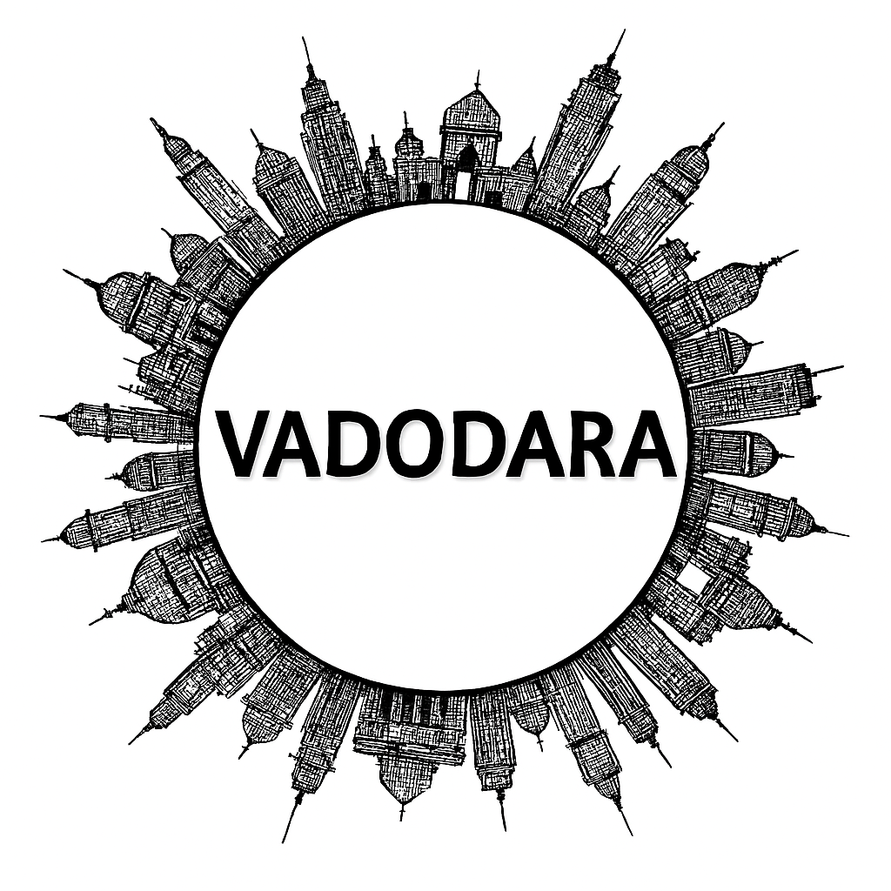

Vadodara
Vadodara, also known as Baroda, is a cultural and educational hub of Gujarat. Once the seat of the Gaekwad dynasty, the city is famous for landmarks such as the Laxmi Vilas Palace, Sayaji Garden, and Champaner‑Pavagadh UNESCO World Heritage Site nearby. Vadodara is celebrated for its vibrant festivals, especially Navratri, which is marked by grand Garba dances. The city also has a strong industrial base, with thriving sectors in petrochemicals, engineering, and pharmaceuticals. Today, Vadodara blends royal heritage with modern development, making it a dynamic center of art, culture, and commerce.
Vadodara, often called the “Cultural Capital of Gujarat,” is a city where art, history, and modern industry thrive together. Once the seat of the Gaekwad dynasty, it is home to the magnificent Lakshmi Vilas Palace, museums, and educational institutions that reflect its royal and intellectual legacy. The city is also known for its vibrant festivals, especially Navratri, celebrated with grandeur and traditional garba dances. With a strong industrial base, flourishing commerce, and a reputation for fine arts, Vadodara stands as a dynamic urban hub that balances heritage with progress.
Peaceful Nature Spots
Historical Places (Itihasik Jagah)
Local Markets (Shopping ke liye)
Famous Festivals
Famous Local Food Items
More Details
Gallery